Professional car care at the client's address in Belgrade and the surrounding area.
Dušan MojsilovMojsilov Detailing
Belgrade, November 2026
Mojsilov Detailing · Company profile
About us
What is Mojsilov Detailing?
Mojsilov Detailing is a brand specialising in professional car care at the client’s address in Belgrade and the surrounding area. Our approach combines a high standard of workmanship with an easy way to book and a visit to whatever location suits the client. This lets us fit the service into their day, whether the car is parked in front of their home or in the company car park.
We believe the quality of a service shows in every step, from the first conversation and agreeing on a time to the final inspection of the vehicle. We respect the client’s time, communicate clearly what the service includes and approach every vehicle with care. For us, innovation has practical value. It shows in how easy it is to book, how much time the client saves and how reliably they can count on what we have agreed.
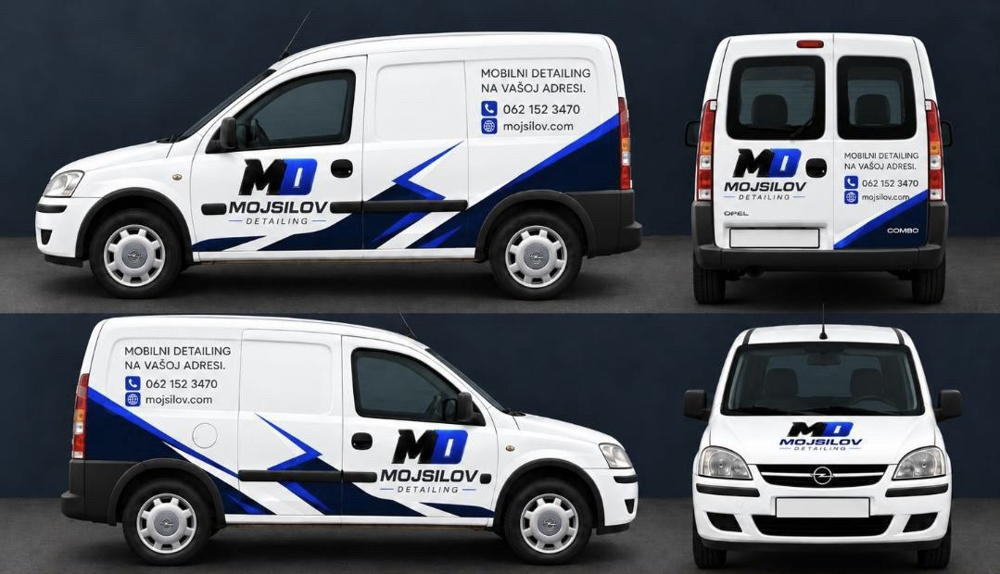
Mojsilov Detailing · mobile car care, Belgrade and surrounding area02
Mojsilov Detailing · Company profile
How we work
How we do business
The most important measure of our work is that a client trusts us with their car again. Their return tells us they were happy with the result, that we kept our word and that they can rely on us. This is the trust Mojsilov Detailing is built on.
Once a time is agreed, we come to the client’s address and take care of the car. We bring all the equipment, our own water and our own power supply, so the client has nothing to prepare. All that is needed is for the vehicle to be accessible at the agreed location, while the client gets on with their day.
We base the quality of our service on experience, knowledge and professional equipment, with attention to the details that make the difference in the final result. While working, we also take care of the places that are easy to overlook, and we adapt the procedure to the condition of the vehicle and the agreed service. Our goal is a thoroughly clean and tidy car that looks as close as possible to how it looked when it was new.
How the client feels throughout the process matters just as much to us. From the first conversation they should know what the service includes and what to expect. We respect their time, keep to what we agreed and make sure the result justifies the trust they have placed in us.
BeforeAfter
Deep cleaning of a seat
Mojsilov Detailing · mobile car care, Belgrade and surrounding area03
Mojsilov Detailing · Company profile
Standards
Mojsilov Detailing service standards
These standards apply to every service and are mandatory for every team member. Their purpose is to ensure safe work, consistent quality and clear communication with the client, from arrival at the address to handing the vehicle back.
01
Arrival at the agreed address
Our team arrives at the exact address the client gave when booking.
02
Vehicle position during work
The vehicle must be positioned so that it does not obstruct traffic, pedestrians, access to buildings or the everyday activities of people nearby.
03
Responsible work
While working, we keep noise to a minimum and organise the job so that it affects people nearby as little as possible. We handle cleaning products and the dirt removed during work in a way that does not endanger people, property or surrounding surfaces.
04
Vehicle protection and warranty
Every vehicle is covered by a warranty in line with the terms of the agreed service. The team must protect the vehicle during every procedure and take the necessary measures to prevent damage.
05
Final quality check
Before handing the vehicle back, we carry out a final inspection. We check that every agreed item has been completed in full and that the result meets the Mojsilov Detailing quality standard.
06
A gift for the client
After every service we leave the client a gift pack as a thank you for their trust.
Mojsilov Detailing · mobile car care, Belgrade and surrounding area04
Mojsilov Detailing · Company profile
Standards
Service standards from arrival to handover
07
A tidy area after work
After every service we remove waste, dirty water and washing residue. We leave the area around the vehicle clean and tidy.
08
Safety and visibility at night
When working at night, every team member wears a fluorescent green high-visibility vest and a head torch. This keeps the work area and the team visible, for the safety of the team, pedestrians and other road users.
09
Keeping to the agreed time
Our aim is to arrive ten minutes before the agreed time in 90% of cases and exactly on time in 5% of cases. If we are delayed, we try to keep it to five minutes, with a maximum allowed delay of ten minutes.
10
Open communication with the client
During the service the client can ask about the procedure, the equipment or the expected result. The team must answer every question clearly and explain the procedure whenever the client asks for more detail.
11
Handling the client’s personal belongings
If personal items need to be moved out of the vehicle, we place them where the client agrees. When handing the vehicle back, we tell the client where they are.
12
Handing the vehicle back
After the final check we show the client the result and give them the chance to inspect the vehicle and ask questions. Where needed, we explain how to look after the treated surfaces and how long to wait before using them.
Mojsilov Detailing · mobile car care, Belgrade and surrounding area05
Mojsilov Detailing · Company profile
Online presence
The Mojsilov Detailing website
The Mojsilov Detailing website is one of our most important projects and the place where clients form their first impression of how we work. That is why we develop it on the same principle as the service we provide on site. We want to save the client time, make the decision easier and give them a clear picture of what to expect, even before they trust us with their car.
Our full offer, prices, detailed service descriptions and service area are all in one place. Before and after photos show the results of our work, while client reviews give an insight into what working with us is like. The website also presents the history of the company, so visitors can get to know the people and the way of working behind the brand.
The website also makes the service easier to use. Private clients have an app for online booking and collecting points in our loyalty programme. Once a partnership is agreed, business partners get access to an app for booking care of company vehicles and following the booking history of their fleet.
Although our website is newer than those of many competitors, it already ranks at the top of search results for a number of relevant keywords. Our next goal is for it to become the leading mobile detailing website in Belgrade, both in search visibility and in usefulness to clients. We are already carrying out this plan through regular content updates, more detailed service descriptions and simpler booking.
For us, the website is the digital expression of the Mojsilov Detailing character. The care we give a vehicle should be visible from the first visit, in how easily the client finds an answer, how clearly they understand the offer and how simply they can book a service.
App for private clients
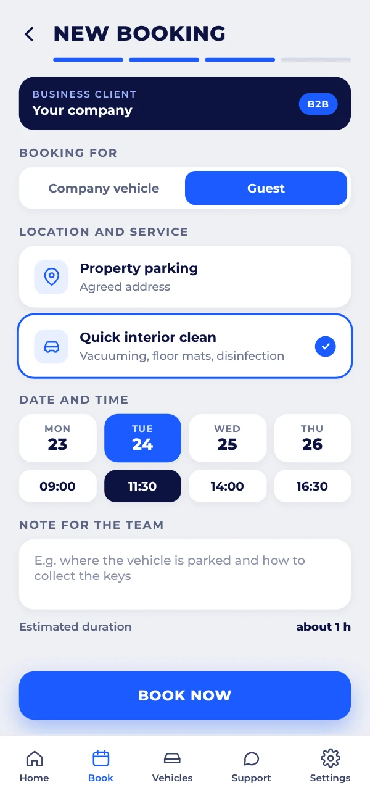
App for business clients
Mojsilov Detailing · mobile car care, Belgrade and surrounding area06
Mojsilov Detailing · Company profile
Customer experience
Customer experience comes first
The client’s experience is the top priority at Mojsilov Detailing. That is why we look at every step of the service from their point of view. We care about how easily they can book, whether it is clear what the service includes, how they feel when talking to us and what impression they are left with when we hand the car back. The quality of our work shows both in the condition of the car and in how we treated the client.
During the service we pay attention to how we talk to the client and how clearly we explain our work. We are open to questions, respect their needs and explain what we are doing, why we choose a particular procedure and what result they can expect. We want the client to know at every moment what is happening with their car and to be able to reach us whenever they need an explanation.
After every service we leave a gift pack as a token of appreciation and send before and after photos of the vehicle, together with a thank-you message. The photos let the client see the changes even in places that are easy to miss at first glance. We have carefully shaped and tested the way we write the thank-you message so that it is short, clear and natural. Our services come with a warranty in line with their terms, and our contact centre is available 24 hours a day, seven days a week, for any questions or concerns.
The best sign that we have achieved our goal is when a client trusts us with their car again or, based on their own experience, recommends us to someone they care about. Such a recommendation shows that we earned their trust through the result they got, the attention we gave them and how simple the whole process was. This is the measure by which we improve our service, from the first contact to support after the job is done.
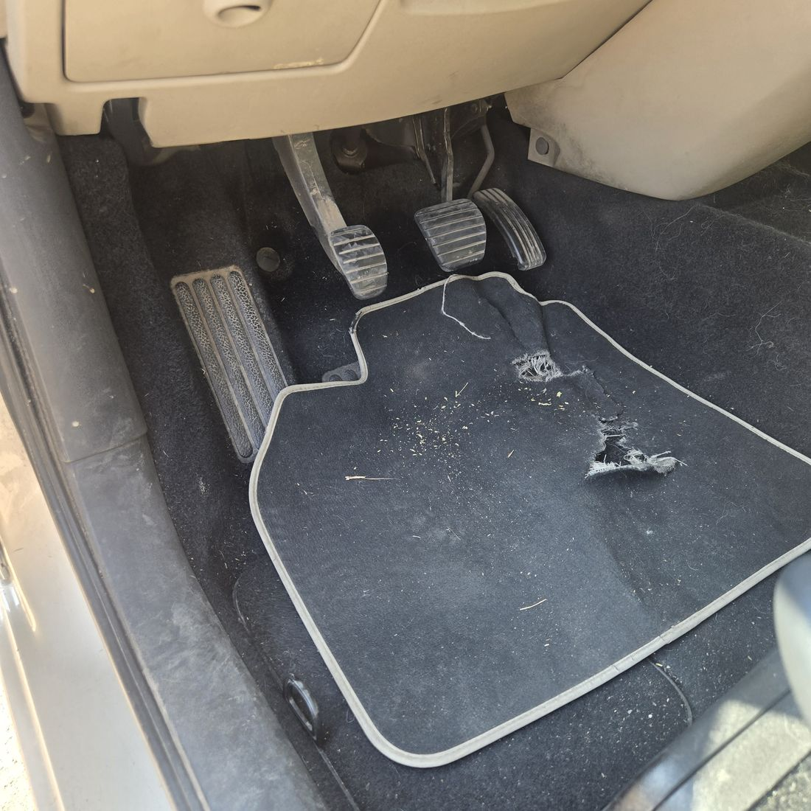
BeforeAfter
Deep cleaning: floor mats and floor
Mojsilov Detailing · mobile car care, Belgrade and surrounding area07
Mojsilov Detailing · Company profile
On site
Mobile car care at the client’s address
Mojsilov Detailing provides professional car care at the client’s address across Belgrade and the surrounding area. We adapt the service to the place where the vehicle already is and to the time that suits the client. While the car is parked in front of their home or in the company car park, our team carries out the agreed treatment and the client gets on with their day. The time they would otherwise spend driving to a car wash, waiting and collecting the vehicle stays with them.
We arrive in a recognisable branded van with professional equipment, products, our own water and our own power supply. We can do the job in a yard, in front of a residential building, in a business car park or at another suitable location. All that is needed is enough space around the vehicle to open the doors fully and work safely, with clear passage for pedestrians and traffic.
We apply the same quality standard at every location, from choosing the procedure and attention to detail to the final inspection of the vehicle. While working, we keep noise down and are mindful of people nearby. When we finish, we remove waste, dirty water and washing residue and leave the area around the car clean and tidy.
The flexibility of a mobile service really shows when the client’s schedule changes. They can book one appointment at home and the next at work, while the car is already parked. This is where we see the value of our approach and the reason to keep improving it. The client chooses where the service suits them best, and we take care of organising the work and looking after the vehicle.
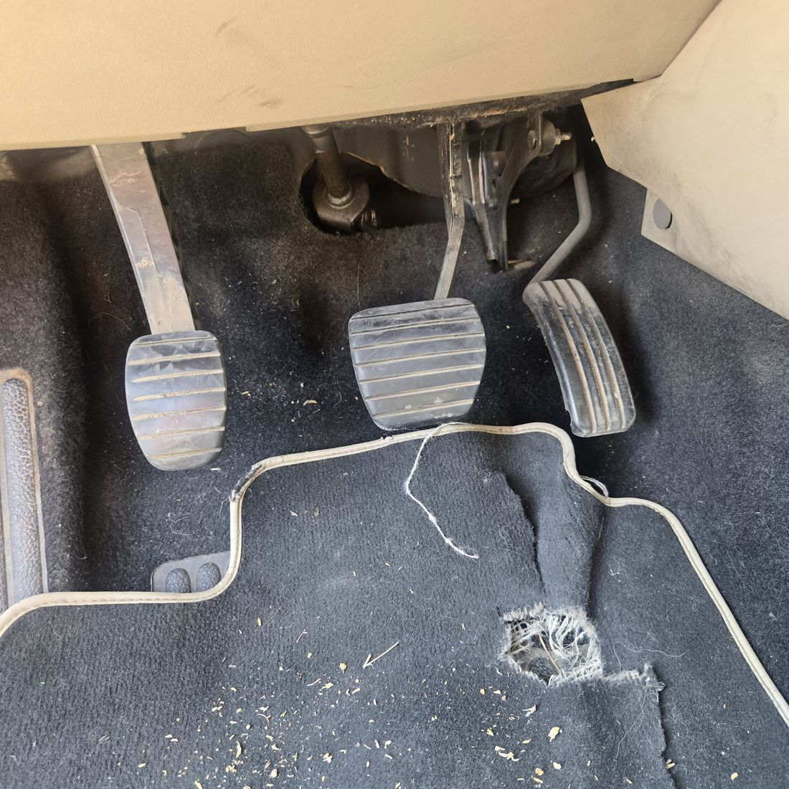
BeforeAfter
Deep cleaning: pedals and floor
Mojsilov Detailing · mobile car care, Belgrade and surrounding area08
Mojsilov Detailing · Company profile
Services
Mojsilov Detailing services
Mojsilov Detailing provides professional car care at the client’s address in Belgrade and the surrounding area. The offer includes regular maintenance, deep cleaning, exterior washing and specialised treatments. Depending on the condition of the vehicle and the client’s needs, we can focus on particular parts of the car or combine them into a detailed interior clean.
Interior cleaning and care
Quick interior clean includes vacuuming, washing the floor mats and disinfecting interior surfaces. It is intended for regular upkeep of a clean and tidy vehicle.
Deep cleaning of seats and textiles covers fabric seats and backrests, floor coverings, carpets, textile floor mats and door upholstery. We adapt the procedure to the type of material and the condition of the surface.
Leather seat cleaning and care is carried out with products made for leather, using a procedure adapted to its condition and how dirty it is.
Deep cleaning of other interior parts covers the headliner, seat belts and the boot. Each part is treated with a procedure suited to its material.
Cleaning and protection of interior surfaces covers the dashboard, centre console, plastic parts, inner door panels, door frames and hard-to-reach areas. We apply UV protection to suitable plastic surfaces and, on request, polish dashboard parts that are suitable for this treatment.
Headlight polishing and engine bay cleaning
Headlight polishing and ceramic protection restore clarity to dull headlights. We adapt the polishing to the condition of the headlights, and after the treatment we can apply a ceramic coating. The warranty on headlight polishing lasts up to 24 months, depending on the package chosen.
Engine bay cleaning removes built-up dirt using a procedure adapted to the condition and design of the vehicle. We take particular care to protect sensitive parts during the work.
Mojsilov Detailing · mobile car care, Belgrade and surrounding area09
Mojsilov Detailing · Company profile
Price list
Mojsilov Detailing price list
Travel to your address is included in the price. For deep cleaning, the price depends on the size of the vehicle and the package chosen. We confirm the exact amount before booking, based on photos and the condition of the vehicle or furniture. All prices are in Serbian dinars (RSD).
Headlight polishing
Service
Price
Warranty
Polishing one headlight
2,500 RSD
Polishing both headlights
3,500 RSD
12 months
Polishing both headlights with ceramic UV protection
4,700 RSD
24 months
Polishing is done in several stages, with preparation adapted to the condition of the headlights. Ceramic protection is part of the 4,700 RSD package.
Deep cleaning of the car and engine bay
Service
Small vehicle
Medium vehicle
Large vehicle
Deep interior cleaning
9,900 RSD
10,900 RSD
11,900 RSD
Deep engine bay cleaning
4,000 RSD
5,000 RSD
6,000 RSD
Leather seat care
4,000 RSD
4,000 RSD
4,000 RSD
Deep interior cleaning covers the seats, floor, headliner and boot, with extraction cleaning, steam treatment and antibacterial treatment. Deep engine bay cleaning includes cleaning and degreasing the engine bay, treating hard-to-reach areas and UV protection of plastics.
Quick clean and separate seat cleaning
Service
Price
Quick clean
3,900 RSD
Quick clean for regular clients
2,900 RSD
Deep cleaning of one seat
1,500 RSD
Deep cleaning of all seats
4,000 RSD
Mojsilov Detailing · mobile car care, Belgrade and surrounding area10
Mojsilov Detailing · Company profile
Service
Deep car cleaning
Deep cleaning at Mojsilov Detailing is thorough car care that we carry out at the client’s address in Belgrade and the surrounding area. Our goal is an interior that is once again clean, tidy and pleasant for everyday driving. That is why we pay attention both to the surfaces you see straight away and to the places where dirt collects, such as seat seams, the space under the seats and the joints between interior panels.
We start the treatment by inspecting the interior and choosing the procedure based on the material, the condition of the surfaces and how dirty they are. We clean fabric seats, backrests, floor coverings and the boot with extraction equipment that pulls dirt out of the fibres. We treat the headliner, inner door panels, dashboard and hard-to-reach areas with procedures suited to each surface. For leather seats we use products made for cleaning and caring for leather.
The client can choose deep interior cleaning or a complete car treatment. The complete treatment also includes exterior washing of the body, windows, wheels and tyres. Before booking, we confirm what the service includes, the price and the expected duration. A complete treatment takes four to five hours on average, depending on the size and condition of the vehicle.
We come to the agreed address with all the equipment, our own water and our own power supply. All that is needed is for the vehicle to be accessible at a location suitable for work, while the client gets on with their day. Before handing the vehicle back, we check that every agreed item is done and then send before and after photos so the client can see the result, even in details that are easy to miss at first glance.
For deep interior cleaning we set aside roughly four to six hours, depending on the size of the vehicle and how dirty it is, so that we can give enough attention to every surface, from the seats and floor coverings to the hard-to-reach parts of the cabin.
Before
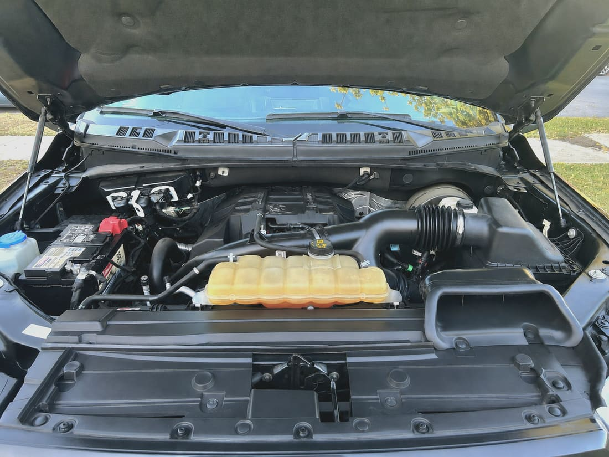
After
Engine bay cleaning
Mojsilov Detailing · mobile car care, Belgrade and surrounding area11
Mojsilov Detailing · Company profile
Service
Quick car clean
The quick clean is a regular interior maintenance service that Mojsilov Detailing carries out at the client’s address. It is intended for vehicles that need a refresh between deep treatments and the removal of dirt that builds up during everyday driving.
The treatment includes vacuuming the interior, dusting the interior surfaces, washing the floor mats and disinfecting the interior. We pay attention to the areas used every day, such as the footwells, the dashboard and the centre console. The service takes no more than two hours, and the car is ready to drive as soon as we finish.
The first quick clean costs 3,900 RSD. After the first treatment, the client can book every following quick clean at the regular client price of 2,900 RSD. This makes it easy to fit regular interior maintenance into their schedule and know in advance what it will cost.
Service
Deep engine bay cleaning
Deep engine bay cleaning removes greasy deposits, dust and dirt that build up under the bonnet over time. The aim of the treatment is a clean and tidy engine bay, with particular attention to joints, recesses and other hard-to-reach places.
Before we start, we inspect the engine bay and adapt the procedure to the design of the vehicle, the condition of the surfaces and how dirty they are. The treatment includes chemical cleaning and degreasing, with careful work around electrical connections and other sensitive parts. Finally, we apply UV protection to suitable plastic surfaces to help preserve their appearance.
We carry out the service at the agreed address in Belgrade and the surrounding area, with our own equipment, water and power supply. When we finish, we inspect the treated surfaces and send the client before and after photos, so they can see the result even in places that are easy to miss at first glance.
Mojsilov Detailing · mobile car care, Belgrade and surrounding area12
Mojsilov Detailing · Company profile
Service
Headlight polishing at your address
Mojsilov Detailing restores dull, yellowed and oxidised headlights at the client’s address in Belgrade and the surrounding area. Multi-stage treatment of the outer surface brings back the clarity and shine of the headlights. When the clouding is on the surface, polishing can be a practical solution that delays the need to replace the headlight. We assess deeper mechanical damage from photos before booking.
What the treatment looks like
01
Surface preparation
Depending on the condition of the headlight, we wet sand in eight to ten stages, with grits from P240 to P3000. This removes surface oxidation and prepares the plastic for polishing.
02
Three-stage polishing
We use a dual-action polisher and professional compounds for heavy correction, finer refinement and final polishing. Each stage contributes to an even finish and a clear final result.
03
Optional ceramic UV protection
After polishing, we can apply a protective coating with a UV filter that helps the headlights stay clear and shiny for longer. With this package the warranty lasts 24 months.
Warranty and prices
If the headlights lose quality during the warranty period for a reason covered by the warranty, we redo the treatment free of charge. Travel to your address is included in the price, and we confirm the exact amount before booking, based on photos and the condition of the headlights.
Arrival, duration and booking
We come to the agreed address with all the equipment, our own water and our own power supply. One headlight usually takes about 45 minutes, and both about an hour and a half. After handing over the vehicle, the client can get on with their day, and when we finish they receive before and after photos. Appointments can be booked by phone, by message or through the Mojsilov app.
Mojsilov Detailing · mobile car care, Belgrade and surrounding area13
Mojsilov Detailing · Company profile
Service
Deep cleaning of car seats
Deep seat cleaning is a treatment for thoroughly cleaning fabric seats and backrests, which Mojsilov Detailing carries out at the client’s address in Belgrade and the surrounding area. During the treatment we remove dirt trapped in the fabric fibres, paying particular attention to seams, folds and the sides of the seats. The service can be booked for a single seat or for all the seats in the vehicle.
What the treatment looks like
01
Inspection and preparation
Before cleaning, we inspect the fabric, assess how dirty it is and identify areas that need special treatment. We choose the product and cleaning method based on the material and the condition of the seats.
02
Deep cleaning and extraction
Using professional extraction equipment, we pull the cleaning solution out of the fabric together with the dirt. We treat stains individually, and when the age of a stain or the condition of the fabric may affect the result, we explain to the client in advance what to expect.
03
Rinsing and final check
We pay particular attention to rinsing the fabric and extracting excess moisture, so that as little cleaning product as possible is left in the seats. Before handing the vehicle back, we inspect the treated surfaces and give the client drying instructions.
Duration and drying
The treatment itself takes no more than two hours. The time needed to dry completely depends mainly on the outside temperature and how well the vehicle is ventilated. When we finish, we give the client an estimate of the drying time based on conditions at the location. The seats are ready to use as soon as they are completely dry.
Mojsilov Detailing · mobile car care, Belgrade and surrounding area14
Mojsilov Detailing · Company profile
Service
Leather seat cleaning and care
Leather seat treatment at Mojsilov Detailing includes cleaning and final care adapted to the type of upholstery and its condition. The aim is to remove the marks of everyday use, preserve the natural look of the surface and leave the seats pleasant to the touch. We pay particular attention to seams, folds and side bolsters, where dirt collects most often.
What the treatment looks like
01
Inspection and preparation
Before cleaning, we inspect the upholstery, its finish and any visible wear. We remove dust and small particles from seams and joints, and choose the product and method based on the condition of the surface.
02
Cleaning the leather
We clean the seats section by section with products made for leather upholstery. We focus on the areas most often in contact with clothing and skin, especially the seat base and the side bolsters of the driver’s seat. On perforated surfaces we work with a controlled amount of moisture so that the product does not stay in the holes.
03
Final care and check
We remove any cleaning residue and, where the type and condition of the upholstery allow, apply a suitable care or protection product. Finally, we check that the surface is evenly treated and has kept the appearance typical of that upholstery.
What you can expect
After the treatment the seats are cleaner, more even in appearance and pleasant to the touch. If during the inspection we notice cracks, peeling or loss of colour, we will explain before we start what result you can expect from cleaning. We carry out the service at your address in Belgrade and the surrounding area, either on its own or together with cleaning the rest of the interior.
Mojsilov Detailing · mobile car care, Belgrade and surrounding area15
Mojsilov Detailing · Company profile
Service
Polishing dashboard plastic parts
Polishing dashboard plastic parts restores glossy surfaces that have developed fine scratches, wiping marks or slight clouding over time. The aim of the treatment is for the treated parts to look clean and even again, while preserving their original finish.
Before we start, we inspect the surface and assess how deep the scratches are. We only polish parts whose material and finish allow it. We treat matt and textured surfaces with cleaning and suitable care so that they keep their look.
We first carefully clean the selected parts and then polish them with controlled pressure, protecting the surrounding surfaces. When we finish, we check the result under different angles of light. Fine marks can become much less visible, while for deeper scratches we explain in advance how far they can be reduced. We carry out this treatment on request, as part of interior care at the client’s address.
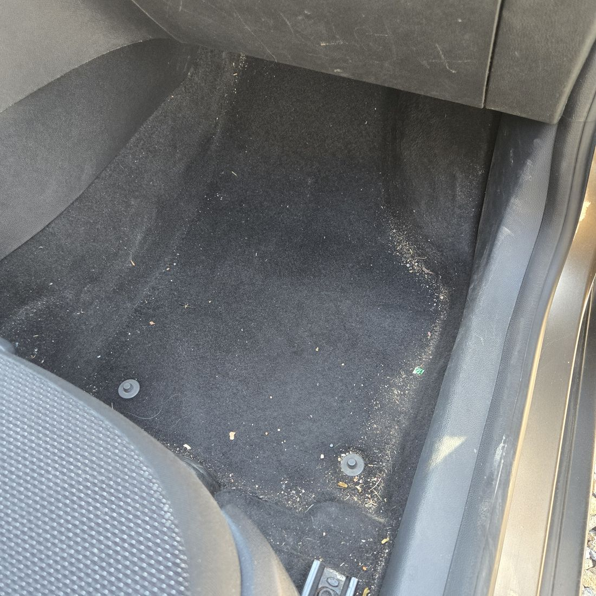
BeforeAfter
Deep cleaning: floor
Mojsilov Detailing · mobile car care, Belgrade and surrounding area16
Mojsilov Detailing · Company profile
For business partners
The Mojsilov app for business clients
The Mojsilov app for business clients lets business partners book care for their company vehicles or their guests’ cars on their own. A booking takes three to four taps, and our team comes to the agreed address in Belgrade and the surrounding area. Interior cleaning, headlight polishing and other agreed services can be planned for when the vehicle is already parked: between two shifts, during a guest’s stay or before the car is handed over to the next client.
App access and booking
Access to the app is granted once a partnership is agreed. With each partner we establish which services are needed, how many vehicles need maintaining and at which addresses we will work. The agreement can cover one branch or several locations, with a visit schedule and benefits adapted to the way the company works.
When booking, the employee chooses whether the appointment is for a company vehicle or a guest’s car, then selects one of the agreed addresses, the service and a free time slot. If needed, they can add a note, for example where the vehicle is parked. Once the booking is confirmed, we organise the visit and bring all the equipment, our own water and our own power supply. When we finish, the partner receives before and after photos and a clear view of the result.
Mojsilov Detailing · mobile car care, Belgrade and surrounding area17
Mojsilov Detailing · Company profile
For business partners
How the service fits into your business
01
Companies with company vehicles
Can book care for their fleet in the company car park and time the visit around drivers’ shifts or the gap between two trips out in the field.
02
Hotels and apartments
Can offer guests car care in the property’s car park. Staff can book an appointment on the guest’s behalf, or the guest can call us directly. Either way, our team takes care of agreeing the service, location and time of arrival.
03
Car dealerships and rent-a-car agencies
Can plan the preparation of vehicles for display or for the next handover. We give rent-a-car partners priority when scheduling, whenever a vehicle needs to be prepared quickly for the next client.
Support throughout the partnership
Visits can be arranged every day, including weekends and public holidays. Our contact centre is available to partners for information about services, help with booking and questions about confirmed appointments. We stand behind the agreed quality even after the treatment is finished. If additional work is needed, we take responsibility and agree the next step with the partner.
Before
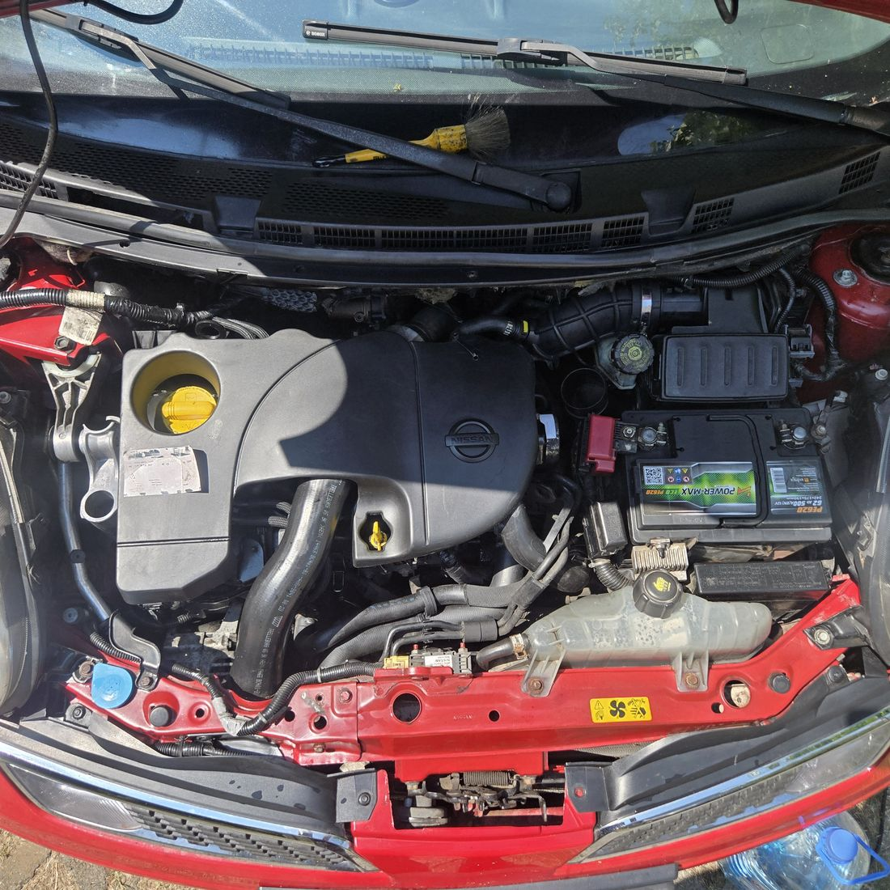
After
Engine bay cleaning
Mojsilov Detailing · mobile car care, Belgrade and surrounding area18
Mojsilov Detailing · Company profile
Partnership
Transparency in our partnerships
At Mojsilov Detailing, transparency means that our partner always knows what we have agreed, what to expect and who to turn to. From the first conversation we talk openly about what we can take on, in what time frame and under what conditions. When we give our word, we stand behind it. If circumstances affect what was agreed, we let the partner know in good time, explain what has changed and agree the next step together.
Open communication also means listening carefully to the other side. We take every question, suggestion or complaint seriously, because the partner’s view helps us understand how our service fits into their business. For questions, arrangements or support, we are available to business partners 24 hours a day, seven days a week.
We build long-term partnerships on mutual respect and responsibility for the commitments we make. When a partner can rely on our word, they can plan their work more easily, and we better understand how to provide a service that truly suits them. In this way the trust we build through everyday cooperation becomes the basis for both sides to grow.
When we give our word, we stand behind it.
BeforeAfter
Deep cleaning: pedals and floor
Mojsilov Detailing · mobile car care, Belgrade and surrounding area19
Mojsilov Detailing · Company profile
Quality
Quality of work and warranty
At Mojsilov Detailing, quality starts with a clear agreement. Before the treatment we establish which parts of the vehicle we will work on and what result the client can expect given the vehicle’s condition. We choose products, equipment and procedures based on the material, how dirty it is and the condition of the surface. If existing damage, wear or a long-standing stain may affect the result, we explain this before we start.
Final check and responsibility for our work
Before handing the vehicle back, we inspect all treated surfaces and check that every agreed item has been completed in full. For deep cleaning, we document the result with before and after photos so the client can clearly see what has been done.
For deep cleaning, we are responsible for the quality of the work and for the agreed scope of the service being completed at the time of handover. How long the interior stays clean depends on how and how often the car is used. If, after collecting the car, the client notices that an agreed part has not been done properly, we look into it and, if we find a fault in our work, agree how to put it right.
Headlight polishing warranty
12 months
Standard polishing of both headlights.
24 months
Polishing with ceramic UV protection.
If the headlights lose clarity or the quality of the finish during the warranty period for a reason covered by the warranty terms, we redo the treatment free of charge.
Mojsilov Detailing · mobile car care, Belgrade and surrounding area20
Mojsilov Detailing · Company profile
Equipment
Products and tools we use on site
Product or tool
Purpose
FX Protect Heavy Cut
A heavy cutting compound we use in the correction stage of headlight polishing, after the surface has been prepared.
FX Protect Vision Coating C-12
A ceramic coating we apply to prepared headlights after polishing. The manufacturer lists headlights among the surfaces suitable for application.
Textile Cleaner 1 L
A concentrated, low-foaming product we use for deep cleaning fabric seats with an extraction machine. It is also suitable for carpets and other textile coverings.
Gyeon Q²M LeatherCleaner Strong 1 L
A product for thorough cleaning of leather seats. We use it to remove built-up dirt and prepare suitable leather for a protective coating.
Gyeon Q² LeatherShield
A ceramic protective coating for compatible leather upholstery. We apply it after cleaning and preparing the surface, to make later care of the leather easier.
FX Protect Heavy Cut, Medium Cut and Fine Cut
Compounds for heavy correction, the intermediate stage and final polishing of suitable glossy dashboard plastics. We choose the compound based on the material, finish and condition of the surface.
FX Protect polishing pads, heavy, medium and finishing
Pads of different firmness that we pair with the compound and the stage of work, from correction to the final finish.
Nasiol CabinShine
A product for final care and protection of interior plastic surfaces. We use it after cleaning to refresh the look of the plastic.
Koch Chemie Mehrzweckreiniger
An interior cleaner for heavier dirt on suitable plastic panels, sills, doors and other interior surfaces.
Koch Chemie Green Star
A concentrated alkaline product we use on heavily soiled, compatible plastic surfaces. We adapt its use to the material and how dirty it is.
Meguiar's Ultimate Black Plastic Restorer G15812
A product for restoring the colour of and protecting exterior plastic, vinyl and rubber trim, such as mouldings and unpainted bumper parts.
Mojsilov Detailing · mobile car care, Belgrade and surrounding area21
Mojsilov Detailing · Company profile
Equipment
Products and tools we use on site
Product or tool
Purpose
Work Stuff detailing brushes of different stiffness
For cleaning seams, joints, corners and other hard-to-reach places. We choose the bristle stiffness based on how delicate the surface is and the type of dirt.
Koch Chemie Glass Cleaner
A product for cleaning the inside and outside of car windows and mirrors. We use it to remove fingerprints, greasy film and everyday dirt.
Ma Fra Fantasie d'Elisir Berga Note
A car fragrance we use to freshen up the cabin after cleaning.
Professional microfibre cloths of different types and sizes
We choose the cloth for the task, from dusting and cleaning windows to treating delicate plastic, removing compound residue and final wiping.
Work Stuff chemical-resistant sprayers
For even application of compatible products and control of the amount we use during the treatment.
Koch Chemie Orange Power
A special product for targeted removal of chewing gum, adhesive residue and other stubborn sticky deposits from compatible surfaces.
Koch Chemie THE FINISHER DisplayExpert
A dedicated cleaner for delicate screens and suitable smooth surfaces. We use it to remove dust, fingerprints and touch marks.
Koch Chemie Gummifix
A non-greasy product for final care of rubber floor mats and suitable rubber and plastic interior parts.
Koch Chemie Fresh Up
A product for neutralising unpleasant odours, which we use after cleaning surfaces and removing the source of the smell.
Koch Chemie Tinten- & Kuli-Ex
A dedicated product for targeted removal of ink and ballpoint pen marks, after first checking material compatibility and colour fastness.
Koch Chemie Motorplast
A finishing protectant we apply to suitable engine bay surfaces after cleaning. It gives the treated parts a neat, even look.
Mojsilov Detailing · mobile car care, Belgrade and surrounding area22
Mojsilov Detailing · Company profile
Results
Our results and achievements
More than 500 completed services show how many times we have been trusted. Client reviews give these numbers meaning. They highlight punctuality, attention to detail and the chance to have the car taken care of at the client’s address while they get on with their day. These are exactly the details we want Mojsilov Detailing to be recognised for.
500+Services completed
130+Client reviews
24Months warranty on headlight polishing with ceramic protection
0Reported cases of client dissatisfaction
What our clients say (Google reviews, translated from Serbian)
“All praise for the young man who does deep cleaning! He is extremely punctual, precise, hard-working and very responsible. You rarely meet someone who approaches their work with so much care and dedication. The car was cleaned down to the smallest detail, from the seats, where the stains were completely removed, to the thoroughly refreshed floor mats and the hard-to-reach areas around the pedals and in the lower part of the cabin where dirt builds up the most. All the stubborn dirt is gone, and the interior now looks and smells literally like new. Every detail was taken care of to the fullest, and the job was done without a single mistake, meticulously and right on time. If you need someone who is extremely reliable and who puts real effort into their work, you have my warm recommendation!”
“An extremely professional service from start to finish. The young man is punctual, pleasant and very dedicated to his work. The headlights are fantastic after the polymerisation and painting; given their previous condition, the result is far beyond my expectations. You rarely come across work of such quality. Congratulations and a big, sincere recommendation!”
“Excellent work. The headlights look like new (a 20-year-old car, and now with a new part ;)). Highly recommended. Coming to your address really saves time, and the result is fantastic at a very affordable price. A professional approach and pleasant communication. Thank you very much. Vukica”
Mojsilov Detailing · mobile car care, Belgrade and surrounding area23
Mojsilov Detailing · Company profile
Results
Before and after headlight polishing
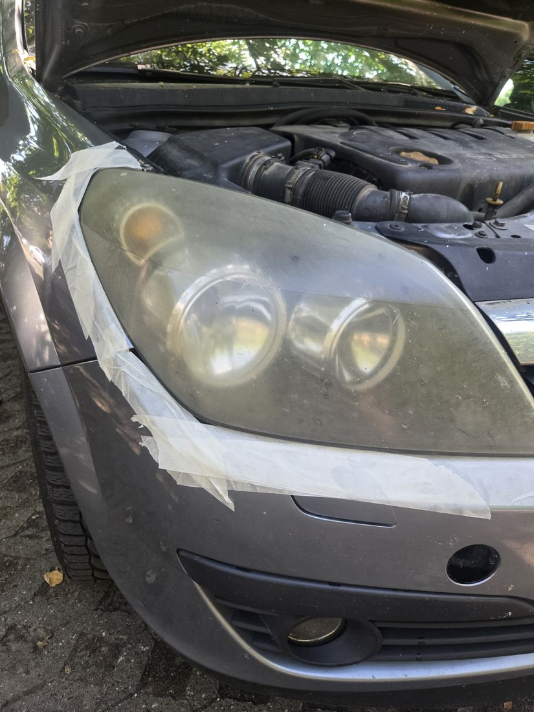
Before
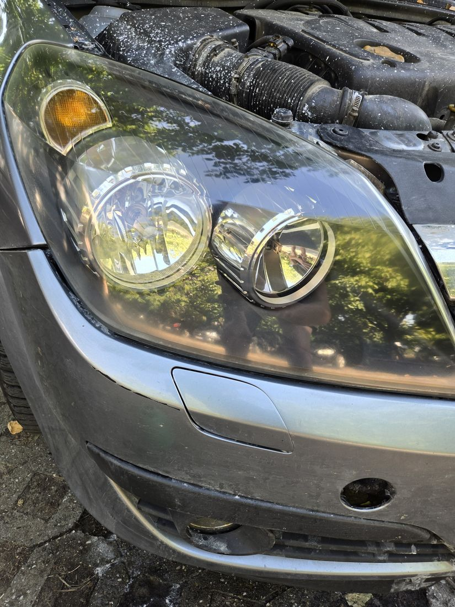
After
Dull headlight, before and after polishing
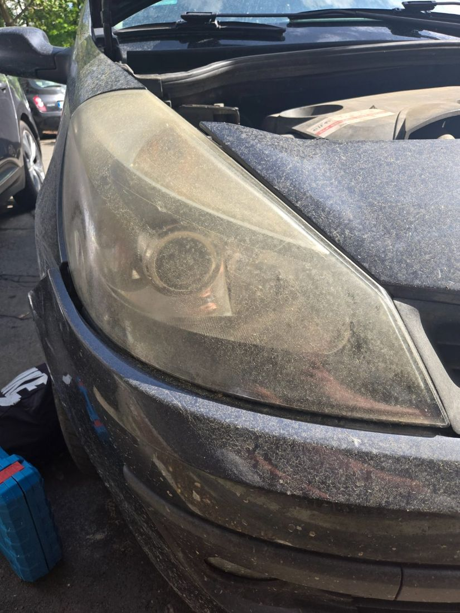
Before
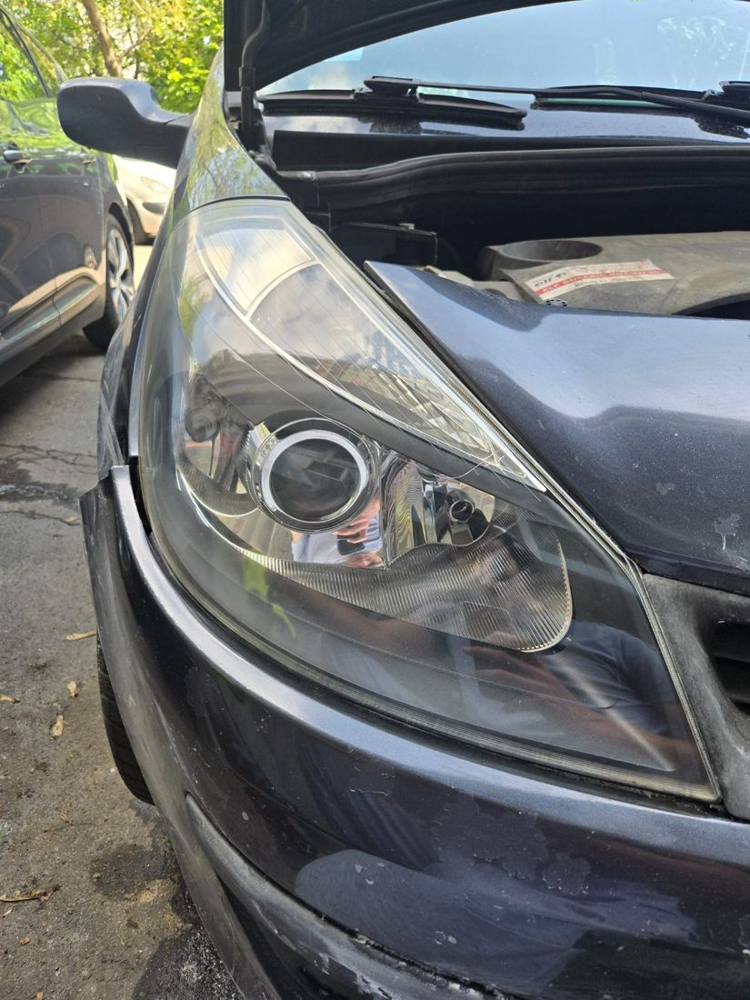
After
Oxidised headlight, before and after polishing
Mojsilov Detailing · mobile car care, Belgrade and surrounding area24
Mojsilov Detailing · Company profile
Results
Before and after headlight polishing
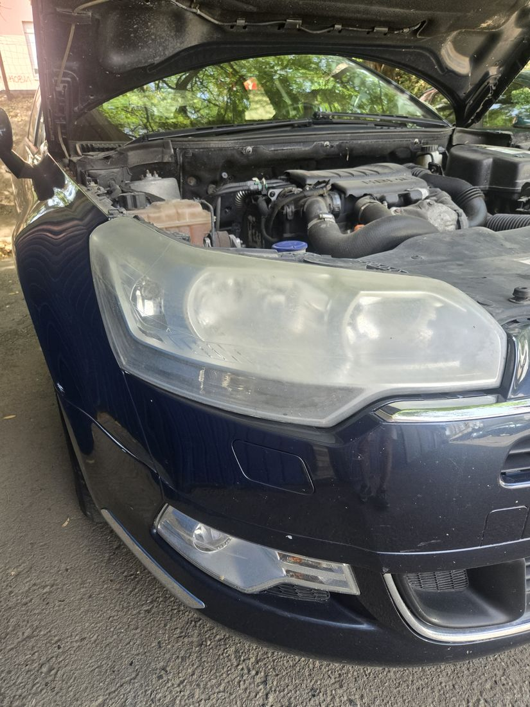
Before
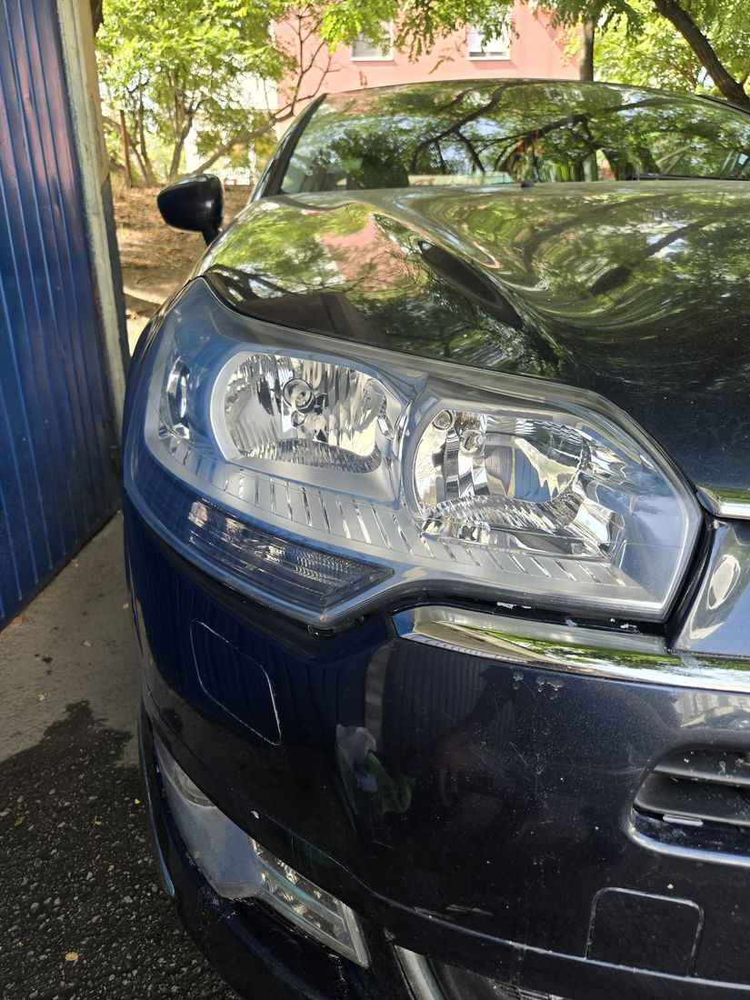
After
Cloudy headlight, before and after polishing
BeforeAfter
Yellowed headlight, before and after polishing
Mojsilov Detailing · mobile car care, Belgrade and surrounding area25
Mojsilov Detailing · Company profile
Innovation
Innovation at Mojsilov Detailing
At Mojsilov Detailing, innovation shows in how much easier we have made car care for the client. Our goal is to make professional detailing accessible for regular vehicle maintenance, with affordable prices and a service the client can fit into their day. That is why we have brought mobile work, digital booking and clear quality standards together into one way of doing business.
01
A mobile service that adapts to the client
We come to the client’s home, the company car park or another suitable location in Belgrade and the surrounding area. We bring all the equipment, our own water and our own power supply. The client can book deep interior cleaning or headlight polishing while the car is already parked, and keep the time they would spend dropping off and collecting the vehicle for their own commitments.
02
Apps that make booking simpler
Private clients can book online and follow their points in the loyalty programme. Business partners have a separate app for booking care of a company vehicle or a guest’s car at one of the agreed locations in a few steps. Digital booking reduces the need for calls and messages, while the contact centre is available for questions, arrangements and support.
03
An affordable price with detailed work
We offer professional vehicle care in a price range that is affordable for a wide range of clients. The value of the service shows in a procedure adapted to the condition of the vehicle, attention to hard-to-reach places and a final check before handover. The client knows in advance what has been agreed, and before and after photos give a clear view of the result.
04
A consistent standard and a recognisable brand
We are developing Mojsilov Detailing as a modern service company, with clearly defined procedures for booking, arrival, carrying out the work and support after the service. The branded van makes our team recognisable on site, while punctuality, a tidy area after work and responsibility for the agreed result give that identity substance.
Our ambition is to build an offer in the car care market that is recognised for how it works in practice. The client books easily, knows what to expect and receives a professional service at a place that suits them.
Mojsilov Detailing · mobile car care, Belgrade and surrounding area26
Mojsilov Detailing · Company profile
Support
Mojsilov Detailing contact centre
The Mojsilov Detailing contact centre is available 24 hours a day, seven days a week, to private clients and business partners. By phone you can book an appointment, get information about our services or ask for help with a visit that has already been arranged. We first listen to understand what you need, and then explain which service suits the condition of the vehicle and the result you want. Before the appointment is confirmed, you get clear information about what the treatment includes, how long it takes and how the visit to your address is organised.
If a further assessment is needed, we connect your enquiry with the colleagues who carry out the treatment, so that you get an answer based on the condition of your vehicle. The contact centre is also available after the service is finished, whether you need advice on maintenance or want to point out something that needs our attention. When we receive a complaint, we listen to you, check what was agreed and explain how we will proceed. Our aim is that after every conversation you know what to expect and who is responsible for the next step.
24/7
Contact centre for clients and business partners.
+381 62 152 3470
Phone, Viber and WhatsApp.
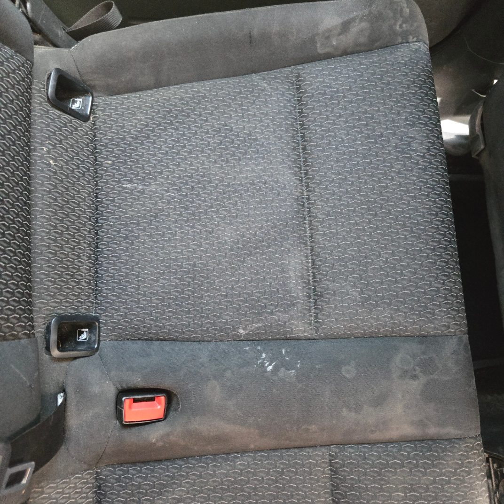
Before
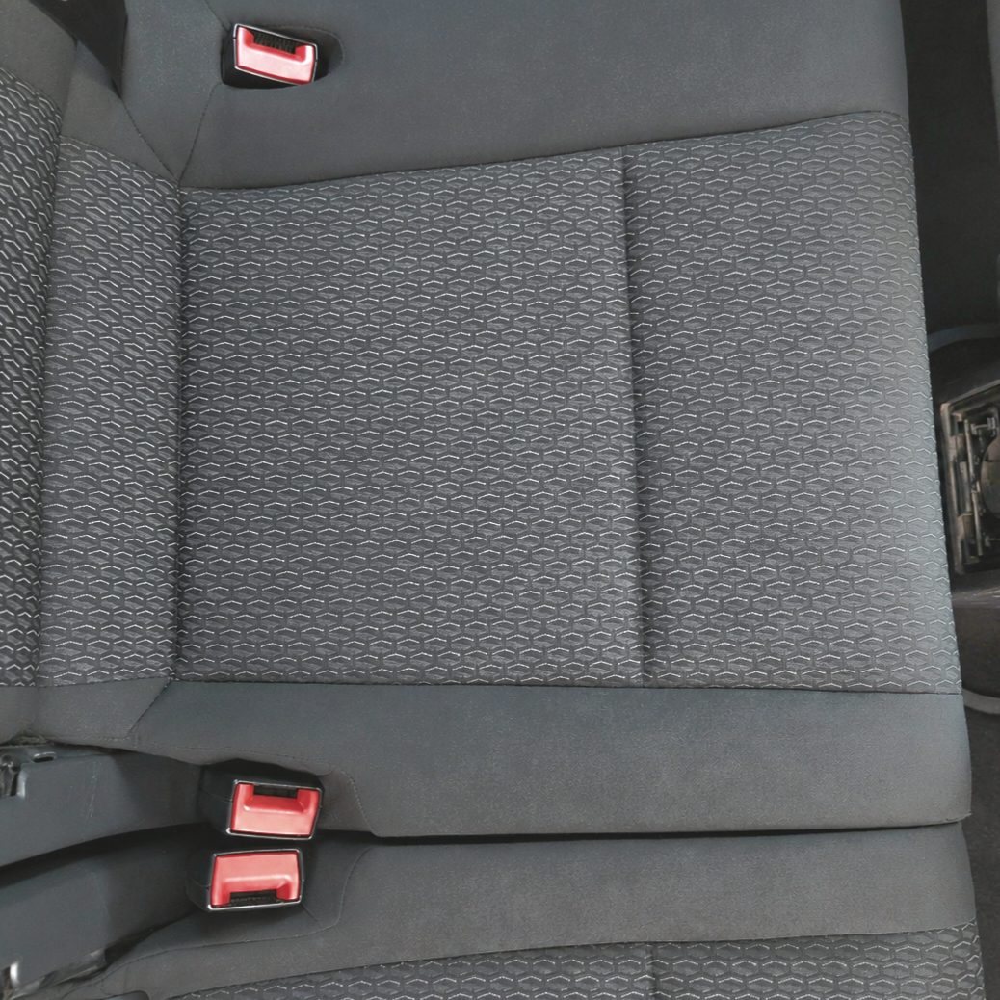
After
Deep cleaning of a stained seat
Mojsilov Detailing · mobile car care, Belgrade and surrounding area27
Mojsilov Detailing · Company profile
Service area
Service area
Mojsilov Detailing provides mobile car care in all 17 Belgrade municipalities and at selected locations in the wider Belgrade area. We come to the client’s home, the company car park, the front of a branch or another agreed location with enough space to work safely. We bring all the equipment, our own water and our own power supply with us.
City of Belgrade
Barajevo, Voždovac, Vračar, Grocka, Zvezdara, Zemun, Lazarevac, Mladenovac, Novi Beograd, Obrenovac, Palilula, Rakovica, Savski Venac, Sopot, Stari Grad, Surčin and Čukarica.
Wider service area
Bečmen, Jakovo, Mala Moštanica, Sremčica, Vrčin, Boleč, Vinča, Veliko Selo, Padinska Skela, Vrbovski, Stari Banovci, Novi Banovci, Nova Pazova, Stara Pazova, Vojka, Ugrinovci and Krnješevci.
Extended service area for business partners
By agreement with a business partner, we can extend the service area to locations outside our regular zone. If a company has vehicles at several addresses, we agree during the partnership talks which locations we can include and how to align visits with the branch schedule and the needs of the fleet.
ContactDušan Mojsilov, Mojsilov Detailing
Phone, Viber and WhatsApp+381 62 152 3470
EmailMojsilovDetailing@gmail.com
Websitemojsilov.com
Mojsilov Detailing · mobile car care, Belgrade and surrounding area28